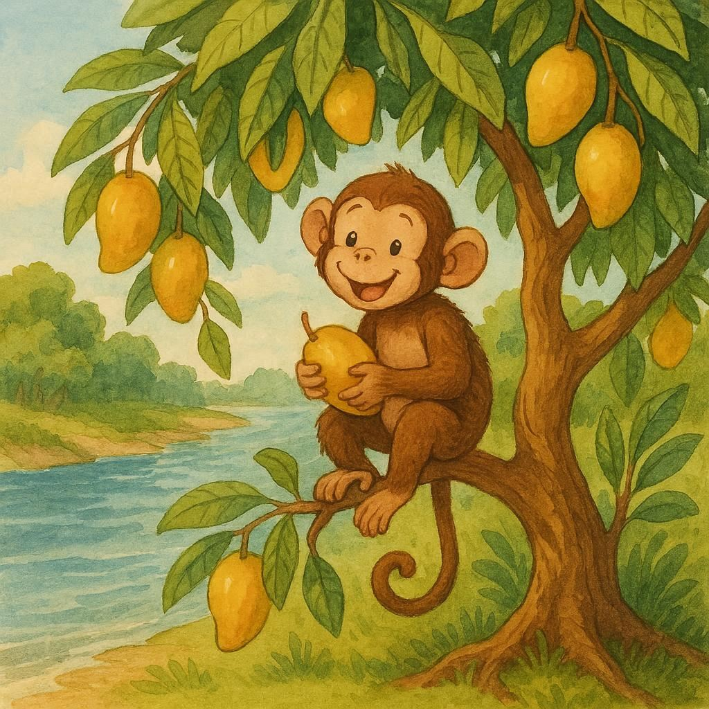
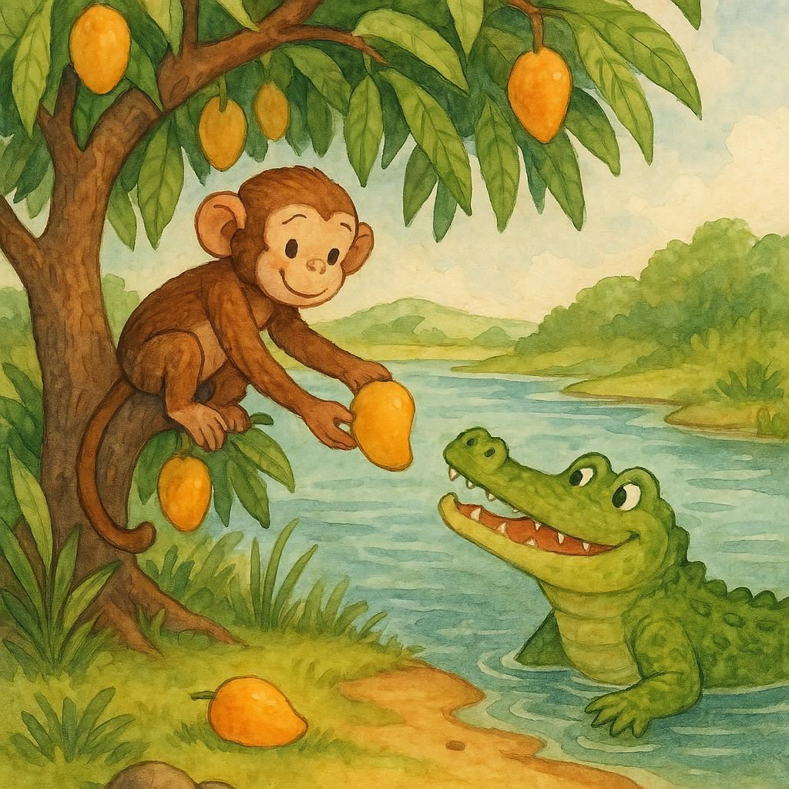
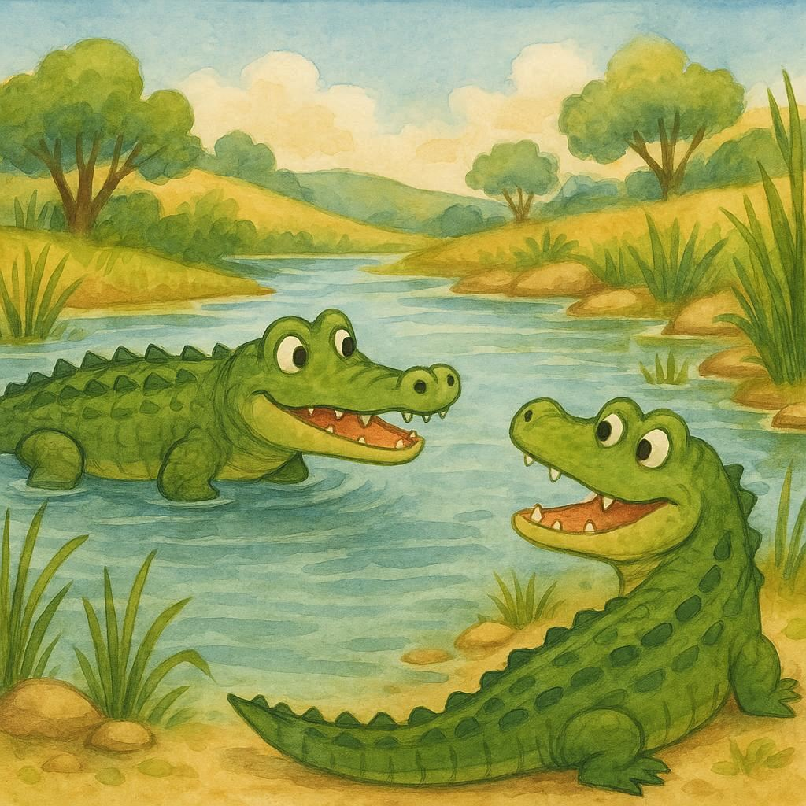
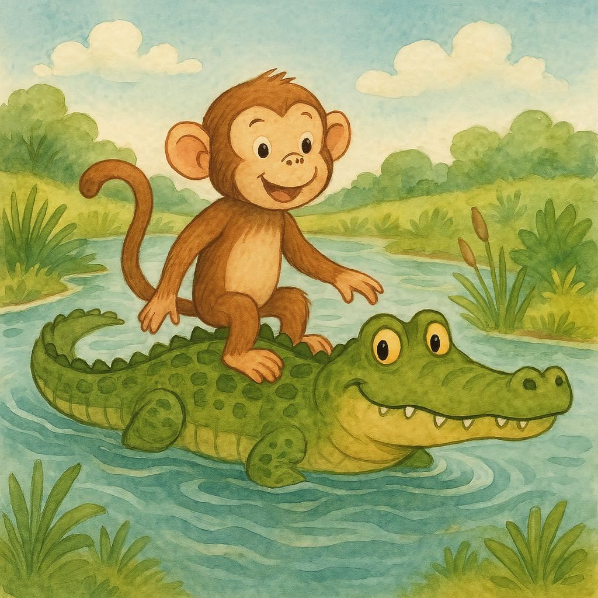
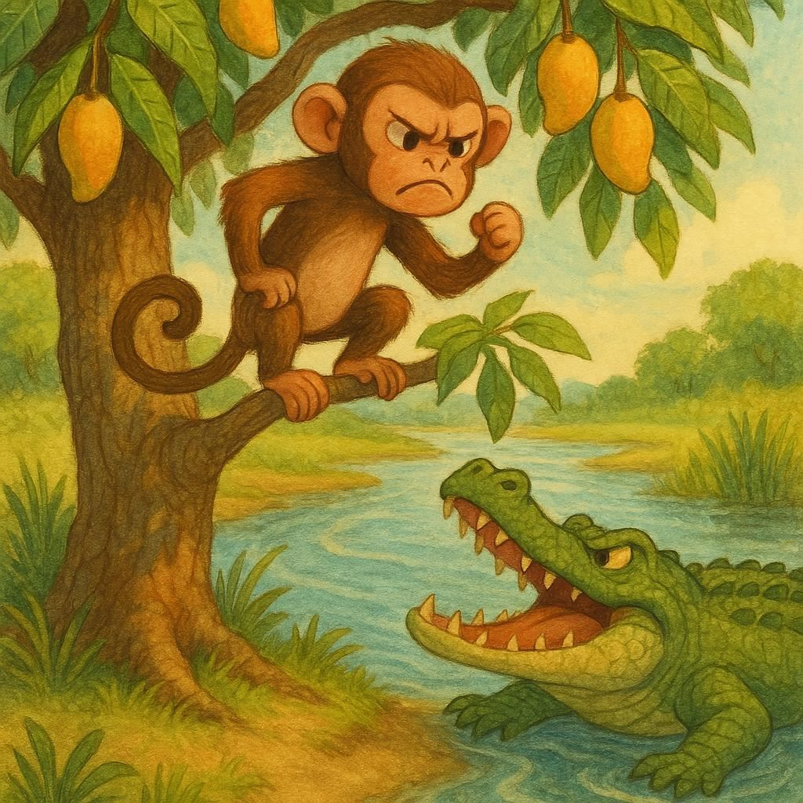

Hace mucho, mucho tiempo, había un mono que vivía en un árbol de mango a la orilla de un gran río.
Long, long ago there was a monkey that lived in a mango tree on the banks of a great river.

Un día, un cocodrilo visitó el árbol, y juntos disfrutaron de los mangos dulces y deliciosos que crecían en la copa del árbol frutal.
One day, a crocodile visited the tree, and together they enjoyed the sweet and delicious mangos that grew in the canopy of the fruit tree.
Durante muchos días, el mono y el cocodrilo comieron mangos a la sombra del imponente árbol de mango, y se convirtieron en los mejores amigos.
For many days, the monkey and the crocodile ate mangos under the shade of the towering mango tree, and they became the best of friends.

Pero un día, los celos comenzaron a crecer en el corazón de la malvada esposa del cocodrilo. Ella exigió que el cocodrilo le trajera el corazón del mono.
But one day, jealousy began to grow in the heart of the crocodile's wicked wife. She demanded that the crocodile bring her the monkey's heart.
—Después de todo —dijo la cocodrila—, ¡si el mono come frutas azucaradas todos los días, su corazón debe saber aún más dulce! —
“After all,” said the crocodile. “If the monkey eats sugary fruits every day, his heart must taste even sweeter”.
El cocodrilo se negó, pero su astuta esposa dijo que estaba muy enferma y que el cocodrilo necesitaba traerle el corazón del mono para curarla.
The crocodile refused, but the cunning wife said that she was very sick, and that the crocodile needed to bring her the heart of the monkey to cure her.

El cocodrilo estaba desconsolado, porque no quería traicionar a su nuevo mejor amigo, pero también amaba demasiado a su esposa para decirle que no.
The crocodile was heartbroken, because he didn’t want to betray his new best friend, but he also loved his wife too much to say no.
Así que un día, el cocodrilo dijo: —Mono querido, mi esposa ha oído hablar de ti y dice que debes venir a visitarnos a cenar, como recompensa por compartir tus mangos deliciosos. —El mono aceptó. Esa noche, trepó a la espalda del cocodrilo y el cocodrilo nadó a través del río.
So, one day, the crocodile said, "My dear monkey, my wife has heard about you and says you must come visit us for dinner, as a reward for sharing your delicious mangoes." The monkey agreed. That night, he climbed onto the crocodile's back, and the crocodile swam across the river.

Cuando estaban a mitad de camino, el cocodrilo confesó: —¡Oh, mono, lo siento mucho! Pero mi esposa está muy enferma y dice que, si quiere vivir, debo llevarle tu corazón. —
When they were halfway across the river, the crocodile confessed: “Oh, monkey, I’m terribly sorry! But my wife is very ill, and she says that if she wants to live, I must bring her your heart.”
Inmediatamente, el mono inteligente dijo: —Sería un honor darle mi corazón a tu esposa, pero ¡lo he dejado en casa! —
Immediately, the intelligent monkey said:”It would be an honour to give my heart to your wife, but I have left my heart at home!
El cocodrilo, rebosante de alegría por la generosidad del mono, lo llevó de vuelta a su árbol, donde el mono trepó rápidamente y no volvió jamás.
The crocodile, overjoyed at the monkey's generosity, took him back to his tree, where the monkey quickly climbed up and never returned.
—Eres una criatura tonta y un amigo traidor —dijo el mono—, porque estabas dispuesto a quitarme la vida por una exigencia injusta de tu esposa. Luego cometiste la estupidez de creerme y traerme de vuelta al árbol. —
“You are a foolish creature and a treacherous friend”. Said the monkey. “Because you were willing to take my life for the unreasonable demand of your wife. Then you were stupid enough to believe me and return me to my tree.

El cocodrilo se fue abatido y nunca volvió a ver al mono.
The crocodile left dejected and never saw the monkey again.